Chapter 10
Registration
Few aspects of voice pedagogy are as perennially controversial as registers. Theories and opinions abound as to their number, names, impact on the voice, and even to their very existence. The entire issue is also a semantic minefield, requiring one to tiptoe through diverse, competing terminology ranging from chest voice and falsetto to modal voice and flageolet. Anyone who has been around singers for very long has almost certainly been exposed to registration concerns. How many of the following terms are familiar to you?
Lowest tones
Fry register
Pulse register
Click mode
Lower tones
Chest voice
Modal register
Heavy mechanism
Belt voice
Speech range
Middle tones
Mixed register
Head voice
Transition area
High tones
Falsetto
Head voice
Light mechanism
Loft mechanism
Feigned voice
Highest tones
Falsetto
Bell register
Whistle register
The above list is far from comprehensive and deliberately excludes many common terms borrowed from other languages, such as flageolet, voix mixte, voce di petto, passaggio, and strohbass. As you can well imagine, this diverse terminology often leads to confusion and misunderstanding, especially among singing students.
What exactly does the term register mean? One generally accepted definition is attributed to the nineteenth century pedagogue Manuel Garcia:
By the word register we mean a series of consecutive and homogeneous tones going from low to high, produced by the development of the same mechanical principle, and whose nature differs essentially from another series of tones, equally consecutive and homogeneous, produced by another mechanical principle (Garcia, 1847).
Three key elements are present in this definition:
- A register is composed of contiguous pitches
- Pitches within any given register are produced in the same physiological manner
- Pitches within any given register share the same basic timbre
Given this definition, the next task is to determine the number of registers present in the voice; this, however, is not always easily accomplished. In many singing genres, ranging from yodeling to popular commercial music, obvious breaks between two distinct registers are part of the stylistic norm. For males, there is a clear demarcation between pitches that lie within the speaking range, almost universally identified as chest voice, and the high, light tones of falsetto. For women, the same type of transition occurs between the low tones of chest voice, which can be quite strong and relatively clear sounding, and the higher tones of head voice (also sometimes called falsetto), which tend to be weaker and breathier sounding, especially in untrained singers.
Opera singers and others trained in the Western, classical tradition generally try to minimize or eliminate noticeable changes of timbre within the total musical scale. Of course, some music is written to highlight these changes; Fiordiligi’s aria “Come scoglio” would be much less dramatic were the huge leaps from high to low all sung in the same register! But since the goal usually is to make all tones share the same basic timbre, as in point three of Garcia’s definition, it could be said that accomplished singers learn to unify the voice into a single register. While this might be the perception of the listener, voice science clearly shows that it is not actually the case. The most perfectly blended voice will still exhibit at least two primary registration events related to laryngeal physiology, accompanied by acoustic adjustments related to formant tuning. Physiologic events in registration are determined by changes in the voice source relating to the manner in which the vocal folds vibrate and the glottis is configured.
The two main options for glottal source mode have been given many labels over time, including chest/falsetto, chest/head, and thick/thin folds. But in an effort to avoid all semantic issues associated with these terms—especially chest and head voice[1]—these primary registers simply will be labeled according to laryngeal function: Mode 1 and Mode 2 (Roubeau et al, 2009).[2] Acoustic factors in facilitating the movement between registers, thereby producing an “even scale,” will be discussed as the chapter progresses.
Mode 1 glottal source
Mode 1 glottal configuration is the source mode for various sound qualities, including chest voice, operatic head voice (the upper extension), and voce finta (feigned voice) in men, and chest voice and heavy belting in women. In Mode 1, the vocal folds are thickened by contraction of the TA (thyroarytenoid) muscles, resulting in greater mass per unit of length and a square-shaped glottis when viewed in frontal cross section (Figure 10-1).
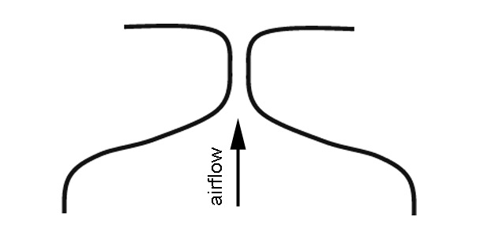
Figure 10-1: Mode 1 glottal cross section
Because the folds are relatively thick, there is a significant vertical phase difference during each cycle of vibration, as demonstrated in example 10/1. Because they are relatively short and have little longitudinal tension, the amplitude of vibration (range of movement during each oscillatory cycle) is high.
Media 10/1: Animation of mode 1
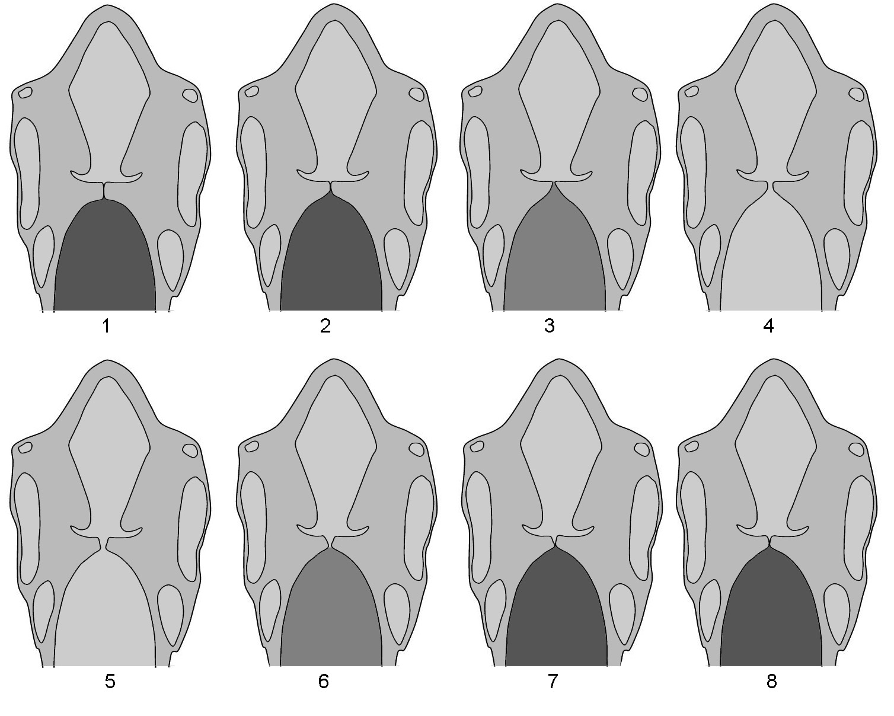Figure 10-2: Mode 1 showing one complete cycle of oscillation
Higher Pitches: Mode 2 glottal source
Mode 2 is the glottal source for sound qualities identified as falsetto in men, and head voice (falsetto, etc.) in women. Glottal configuration and phonation characteristics contrast sharply with Mode 1. Pitch modulation now relies more heavily on contraction of the cricothyroid muscles (CT), which simultaneously elongate and thin the vocal folds. The glottis assumes a triangular shape in cross section with a narrow area of vocal fold contact during phonation (Figure 10-3).
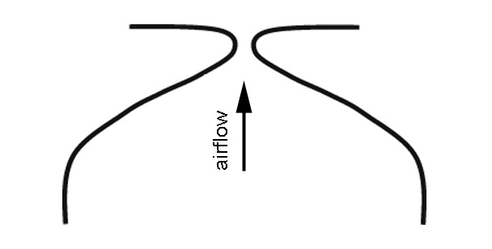
Figure 10-3: Mode 2 glottal cross section
Vertical phase differences are greatly reduced and can entirely cease to exist. Mucosal movement is focused along the medial margins of the vocal folds, as can be seen in video example 10/2. Because they are relatively long and have increased longitudinal tension, the amplitude of vibration is low.
Media 10/2: Animation of mode 2 oscillatio
 Figure 10-4: Mode 2 vibration showing little or no vertical phase difference
Figure 10-4: Mode 2 vibration showing little or no vertical phase difference
For very high pitches, as typified by male falsetto and female flageolet or whistle voice, the glottis might never completely close during Mode 2. The vocal folds, however, continue to oscillate, alternately making the glottis wider and narrower (Figure 10-5).
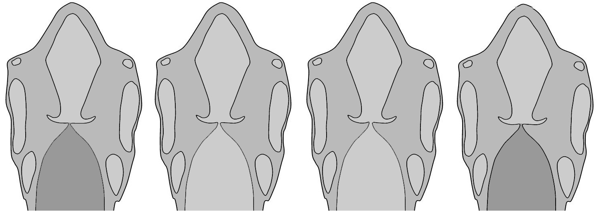
Figure 10-5: Incomplete glottal closure during flageolet or flasetto production
This change in dimension alone is sufficient to induce pressure variations in the air that are identified as sound (10/3).
Media 10/3: Animation of partial glottal closure
Further information about glottal source modes is revealed through electroglottagraphic analysis (EGG) and computer software such as Voce Vista.[3] As demonstrated in Chapter 5, EGG estimates glottal closing patterns by measuring resistance to signals passed through the larynx between a pair of electrodes. The procedure is non-invasive, safe, and totally free from discomfort; test subjects are able to sing absolutely normally while measurements are taken (Figure 10-6).
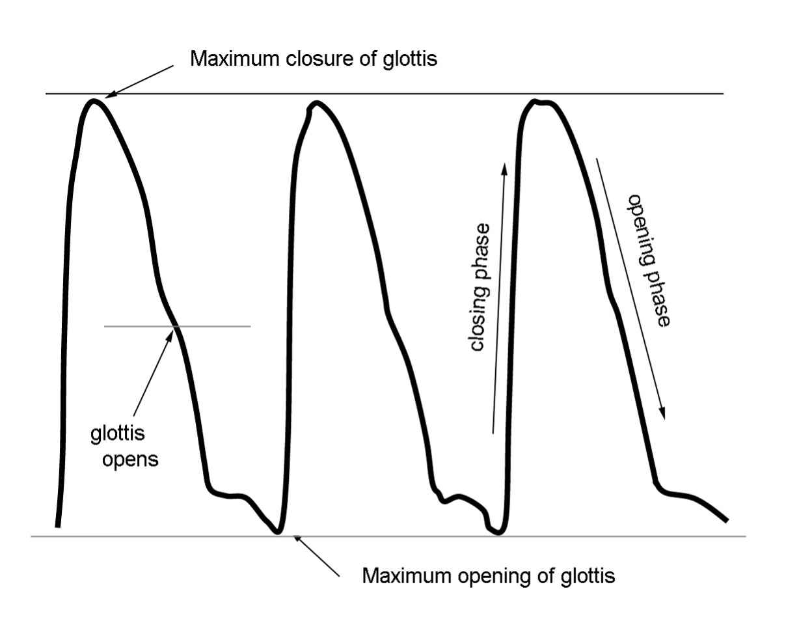
Figure 10-6: Characteristics of the EGG signal
Video example 10/4 demonstrates Mode 1 and Mode 2 in male and female voices. Remember that in the EGG tracing, maximal glottal closure occurs at the top of the graph, maximal opening at the bottom.
Media 10/4: Modes 1 and 2 in female and male voices
As shown in the EGG signal, closed quotient[4] in Mode 1 is relatively high, often greater than 40% and potentially reaching 85% in strong baritones and tenors (CQ typically increases with ascending pitch and with increasing amplitude) (D. Miller, 2008). More importantly, the contour of the EGG signal shows a distinctive pattern in which the glottis closes much more quickly than it opens during each cycle of vibration (Figure 10-7) (Baken, 2000).[5] Because the area of contact between the folds is wide and glottal closure is rapid and prolonged, the sound produced has a shallow spectral slope, generally twelve dB/octave or less, with strong acoustic energy in high harmonics (Sundberg, 1987).
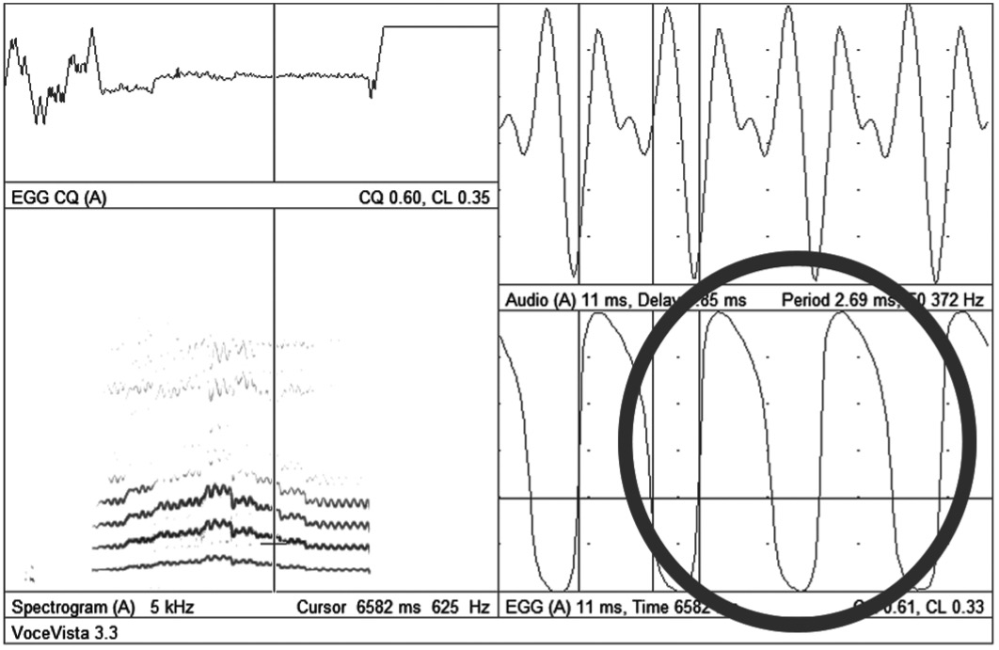
Figure 110-7: Mode 1 vibration in male singer. C!Q is 61% and the glottis closes more quickly than it opens
In source Mode 2, closed quotient typically drops to less than 40%, but might rise significantly for high pitches sung loudly, especially in countertenors and women with strong, clear voices (D. Miller, 2000). Compared to Mode 1, the amplitude of the EGG signal is reduced. EGG also demonstrates that closing and opening phases now are nearly equal in duration, creating a signal that is shaped more like a teepee (Figure 10-8). This slower glottal closing rate, longer open phase, and narrower area of contact between the folds during oscillation results in a steeper spectral slope (>12dB/octave) and reduced intensity in high harmonics.
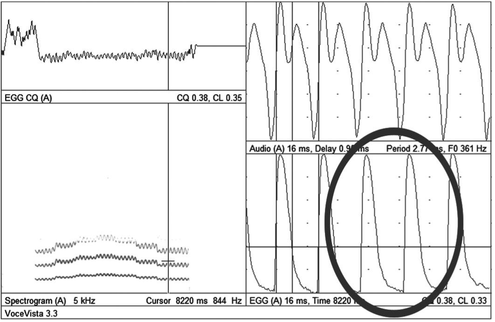
Figure 10-8: Mode 2 vibration in female singer. CQ is 38% and the glottis closes and opens at approximately the same rate
For women, the range of pitches possible in the two source modes varies greatly from person to person. Classically trained singers, be they contraltos, mezzos or sopranos, generally will shift from 1 to 2 somewhere in the scale between C4 and F4; it is physically possible, however, to carry Mode 1 higher and Mode 2 lower. Richard Miller suggests the location of the change from Mode 1 to Mode 2, which he labels the primo passaggio in women’s voices, can be used to determine a singer’s optimal voice type, or Fach (R. Miller, 1986). Women who specialize in belting, as for music theater repertoire and various forms of commercial music, might learn to continue with Mode 1 to C5 or even higher (some recent Broadway shows, such as Wicked, require it to extend to F5 and possibly beyond). But once the shift has occurred—be it at C4 or F5—Mode 2 continues as the dominant glottal source to the upper limit of an individual singer’s range.
Most women have a range of pitches that can be produced using either mode (10/5); indeed, the belter who is able to carry Mode 1 through F5 probably can continue Mode 2 downward to C4 or lower.
Media 10/5: Singing the same pitches in different source modes
The choice of which mode to use is determined by artistic factors, the timbre that is desired, and of course, the tessitura that must be sustained. Mode 1 almost always will be louder than Mode 2 and often will have a brassier timbre because of its strong, high frequency harmonics. Both of these factors make Mode 1 a useful option for singers confronted with the dramatic, unexpectedly low pitches that are found in many opera roles and art songs.
The relationship between source modes is different for men. In the majority of singers, be they basses, baritones or tenors, Mode 1 is used exclusively throughout the total voice range. Mode 2 is reserved only for falsetto singing and is the dominant form of voice production for falsettists, including countertenors, male sopranos, female impersonators, barbershop tenors, and some commercial singers such as Smokey Robinson, members of the Bee Gees, and various a cappella groups such as Take Six. Traditional “Irish” tenors often sing their highest tones using Mode 2 and operatic singers sometimes employ it for comic effect or for high notes that must be sung at exceptionally quiet dynamic levels. Many opera singers also use Mode 2 for marking[6] during rehearsals.
As with women’s voices, the pitch range possible within each mode varies widely from singer to singer. Untrained basses might find it difficult to extend Mode 1 beyond C4; successful operatic basses, however, must be capable of at least F4-sharp. Operatic baritones are generally able to maintain Mode 1 phonation through A4-flat, while successful tenors usually can extend to C5 or slightly higher (of course, there always are exceptions—some people have extraordinary physiognomies that permit them to achieve vocal feats that exceed capabilities of others).[7] Beyond these upper extremes, a shift to Mode 2 must occur, accompanied by a noticeable change in timbre (Figure 10-9, 10/6).
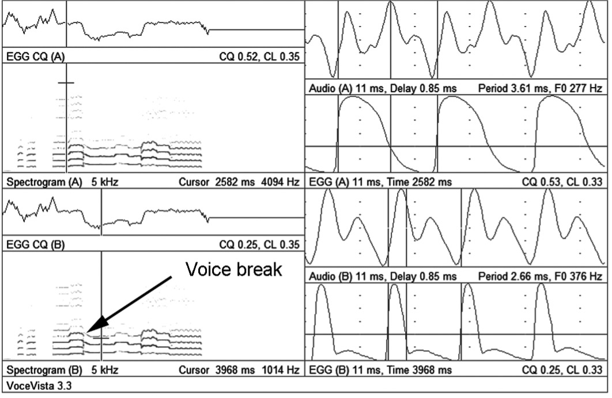
Figure 10-9: Male voice reak between source modes. Note the drop in CQ from from 53 to 25% and the change in the contour of the EGG signal (the upper portion of the display precedes the break, the lower portion is immediately after it)
Media 10/6: Voice break when changing source modes
Men also have a range of pitches that can be produced with either mode as the sound source, which, as with women’s voices, can be an octave or more in total compass; timbral differences in this area of overlap, however, likely will be much more acute. Video 10/7 demonstrates the same musical pitch sung alternately in Mode 1 and Mode 2.
Media 10/7: Same pitches sung with different source modes
Resonance & Register Issues in Female Voices
Women encounter two main transitional areas where changes must occur in source or resonance modes. The first transition, or primo passaggio, is a complex event involving both physiological changes and realignment of resonance, occurring somewhere between C4 and A4. As previously stated, Mode 2 replaces Mode 1 as the sound source (10/8); this, however, will happen abruptly with an obvious voice break unless appropriate adjustments are made to vowels and breath support (Figure 10-10).
Media 10/8: Voice break when chaning source modes
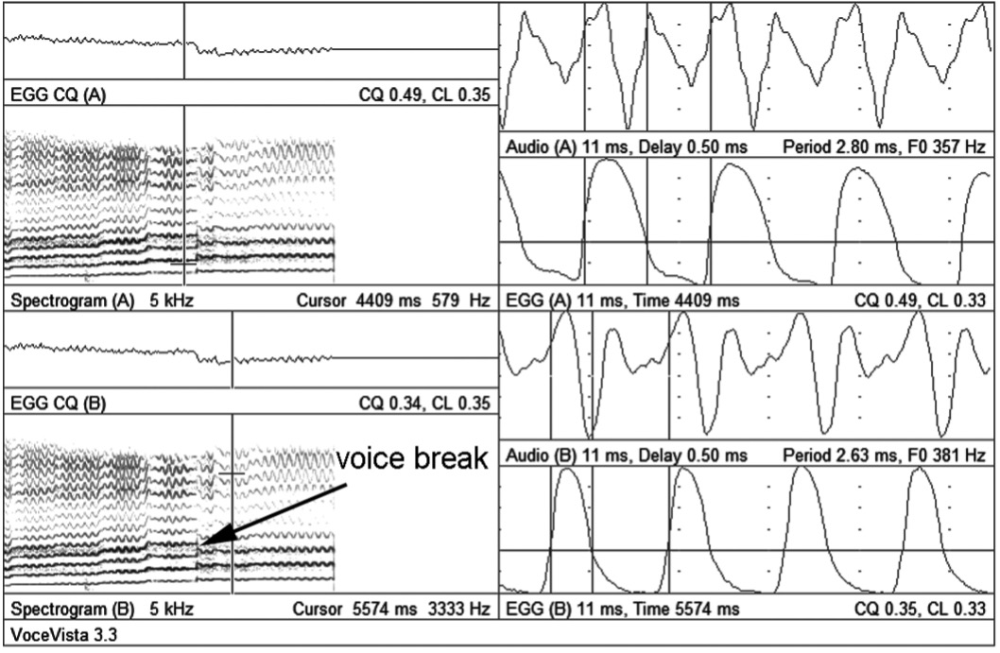Figure 10-10: Female voice break between source modes. Note the drop in CQ from 49 to 36% and the change in the contour of the EGG signal (the time cursor in the upper portion of the display precedes the break; the lower portion is immediately after it). The example begins at a very low pitch, making the spectrogram look like it might be male singer.
In this passaggio region, women usually modify vowels toward a more closed position, taking advantage of formant tuning;[8] vowels with low first formants (/i/, /e/, and /u/) generally are the most successful options. Breath pressure also must be carefully modulated. Inexperienced singers are particularly likely to push excessively with the breath, generating high subglottal pressures that encourage Mode 1 to continue beyond its optimal pitch zone, which makes a clean transition to Mode 2 much more difficult. For this reason, pedagogues usually employ a top down strategy when teaching this skill.
The second transition area (secondo passaggio) happens toward the top of the musical staff in the pitch range from approximately E5 to A5. As with the first transition area, breath support must be carefully modulated to avoid excess subglottal pressure (Figure 10-11).
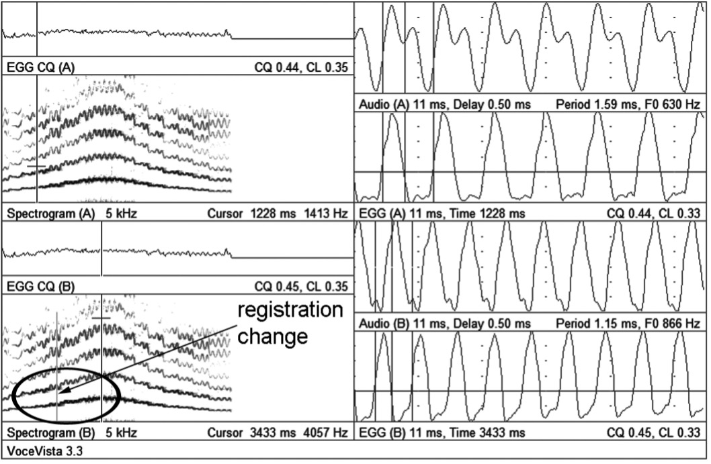
Figure 10-11: Upper passaggio in operatic soprano. Note the change of the dominant harmonic from 2Fo to Fo at the moment indicated by the arrow. CQ and EGG contour do not change.
This transition, however, is a change in resonance, not in source—Mode 2 often already has been the source mode for an octave or more. Because the source mode does not change, we might refer to this passaggio as a change of registration, rather than a change of register. Unfortunately, this distinction does not mean the transition is problem free. Once again, formants come to the rescue. As most women singers are aware, closed vowels become increasingly difficult to sing with accuracy as pitch ascends beyond approximately F5. The reason for this was explained in Chapter 4 and bears restating: at high pitches, the fundamental frequency easily can exceed the average frequency of the first formant for all closed vowels. Vowel modification is required, but this time the alteration is toward high F1 vowels. The average first formant of /a/ in women’s voices is located at approximately 850Hz (just below A5). This vowel therefore becomes the “target” for all sounds produced at the upper end of the second transition area; indeed, Fo is so high at this point that all other vowels essentially cease to exist.
The entrance to this transition requires a slightly different strategy to better synchronize resonance and glottal source. When approached from below on /a/, F1 must be slightly lowered. This adjustment is achieved by lowering the larynx, or by modifying toward /ͻ/, a vowel with F1 closer to 700Hz (F5). A quick look at the relative intensity of harmonics provides an explanation for why this change is beneficial. When singing /a/, which we already know is the vowel favored by composers for women’s high notes, the second harmonic (2Fo) falls under the influence of the first formant (F1) at about the pitch G4. This is the point in the musical scale where formant and harmonic cleanly intersect, as was shown in Chapter 4—both claim the pitch G5. To maintain the 2Fo/F1 link as pitch ascends toward the top of the staff, the singer gradually drops her jaw. This action progressively elevates the frequency of F1, allowing it to track with 2Fo (Sundberg, 1987). Eventually, however, this strategy becomes counterproductive. By the time she reaches E5, the average frequency of F1 is closer to (1)Fo than 2Fo. To maintain the link between F1 and 2Fo as pitch goes higher, the formant frequency also must rise. This elevation requires one of three things to happen: the jaw must drop farther; the vocal tract must be shortened by spreading the lips into a wide smile; or the vocal tract must be shortened by lifting the larynx. But by continuing to emphasize 2Fo, timbre becomes increasingly strident and phonation increasingly difficult (D. Miller, 2008). The solution is to substitute /ͻ/ for /a/, which allows Fo to become the dominant harmonic in the spectrum by lowering F1 and breaking its link to 2Fo (Figure 10-11, 10/9). Once this modification occurs, the vowel gradually can shift back toward /a/, maintaining this new link between Fo and F1.
Media 10/9: Vowel modification
Closed vowels present their own challenges in the passaggio and beyond. Beginning at about E4, we expect F1 to provide a strong reinforcement of Fo, making it the dominant harmonic in the spectrum. As pitch ascends, F1 must be elevated in a manner similar to that used for /a/. But in this case, F1 is tracking (1)Fo instead of 2Fo, which inevitably leads to a change in vowel timbre, as was demonstrated in Chapter 4 (Figure 10-12).
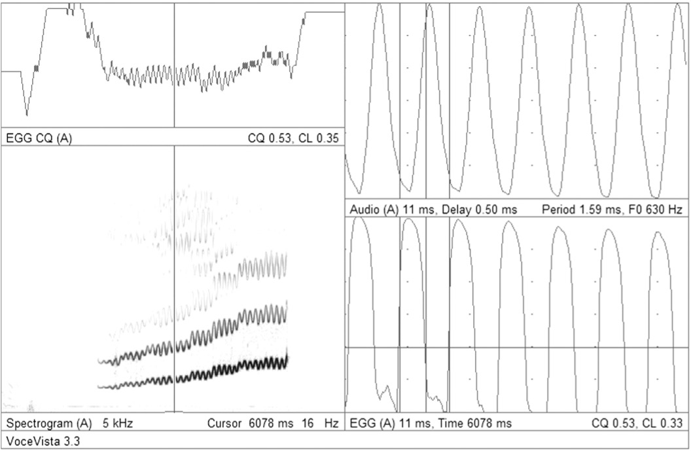
Figure 10-12: Closed vowel ascending scale. F1 tracks Fo, steadily increasing its amplitude.
The best solution to this problem is to “go with the flow.” If /i/ is an acoustic improbability at G5, exchange it for a vowel that fits. The word exchange has been carefully chosen in lieu of the more commonly used modify. Modification suggests that a minor adjustment is all that is required. In the middle part of a woman’s voice where F1 and Fo are still in reasonably close proximity, small modifications might indeed suffice. But by the time pitch ascends beyond the musical staff, subtle adjustments no longer are enough. Because of the vowel/pitch/ formant relationship, these upper pitches essentially will sound like /a/ regardless of which vowel is shaped in the vocal tract. It still may be possible to perceive timbral differences resulting from different configurations, but they will be alterations of color, not vowel (Figure 10-13, 10/10). Pedagogically, a good option is to determine which vowel shape produces the most beautiful, free sounding tone, and substitute that for whatever vowel has been indicated by the composer. In Beethoven’s Ninth Symphony, the text “die ganze Welt,” which repeatedly is sung by the sopranos at the pitch A5, will sound to the audience like “da ganza Walt,” no matter how hard the singers try to produce the written vowels. Given that fact, isn’t it more productive simply to change the vowels to ones that actually can be sung?
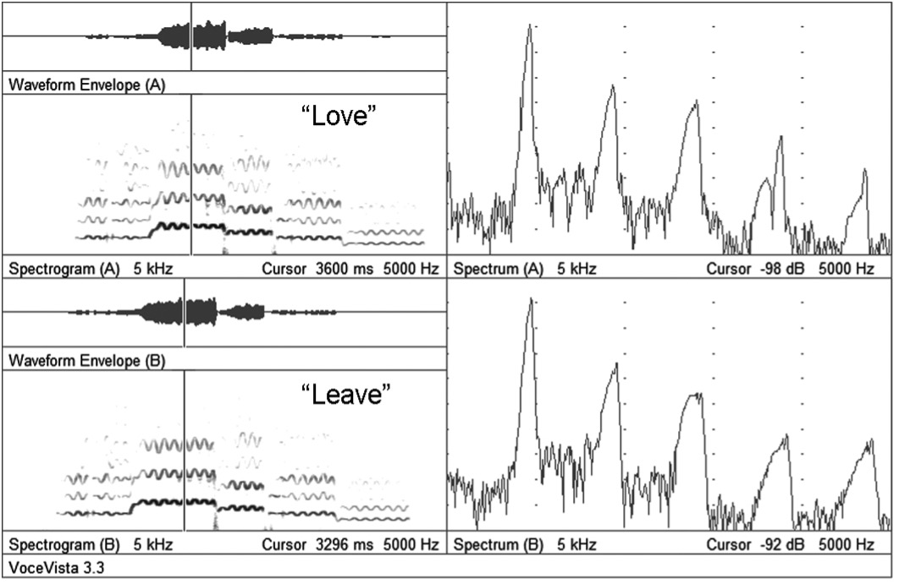
Figure 10-13: Soprano singing the words "love" and "leave" on A5. No significant differences can be seen in the spectra.
Media 10/10: Video of the static analysis above in Figure 10-13
Some women have an additional upper range extension, variously labeled flageolet, bell or whistle voice, which can be used for pitches exceeding approximately C6. Mode 2 continues as the source, although the glottis probably never completely closes. Once again, adjustments to resonance are crucial. All pitches in this range have fundamental frequencies that significantly exceed the first formant region of all vowels; indeed, Fo actually can exceed the typical frequency of F2. As a case in point, D6 vibrates at approximately 1,175Hz; only /i/ and /e/ have higher second formants, found at 2290Hz and 1840Hz, respectively. F2 comes close for /a/ at 1090Hz, but is significantly lower for both /o/ (840Hz) and /u/ (870Hz). Clearly, it is no longer possible to use formant tuning to match Fo with F1. It may be possible, however, to synchronize Fo with F2, or even the second harmonic with F3 or F4. This may explain why some singers approach this vocal region in the posture of a smile, with broad lateral opening and reduced vertical space. The result of this posture is the approximate tuning of the second formant to the fundamental frequency. The mouth is held in a position that resembles the shape required for /e/; the projected sound, however, has no clearly identifiable vowel. Some singers find this transition more successful when using a modification toward /u/, with a small degree of jaw closure and lip rounding. Again, the projected sound is essentially neutral, without any clear vowel. In this case, there is likely a coincidence between 2Fo (or higher) and F3 or F4.
Resonance & Register Issues in Male Voices
Male voices also encounter transition areas where changes must occur in source or resonance modes. The first transition, or primo passaggio, is a “non-event” for many men. Nonetheless, if problems exist in this region, higher portions of the voice are unlikely ever to function at their best. Richard Miller identifies this transition, which occurs somewhere between F3-C4, as the zone where the larynx is likely to elevate, especially in untrained singers (R. Miller, 1986). Problems in this region have an easy solution: stabilize the larynx. A second transition is seen to occur somewhere between C4 and A4, which would be defined as the secondo passaggio. Pitches lying beyond this point are said to be in the operatic head voice or upper extension (D. Miller, 2008). Pitches below, within, and above these transition zones have one thing in common: they share Mode 1 as their glottal source.
Formant tuning, by matching appropriate vowels to specific pitches, is especially important when making the transition into the upper extension. Interestingly, this passaggio occurs in the same pitch range where females make their primary transition from Mode 1 to Mode 2. Men often interpret their change as a similar physiologic event; it is, however, exclusively a realignment of resonance. Electroglottography clearly demonstrates this phenomenon. Figure 10-14 shows an EGG tracing of a singer moving from the lower register into the upper extension (10/11).
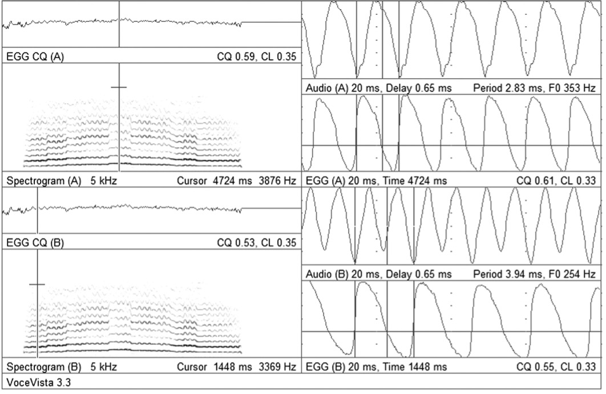
Figure 10-14: Male upper passaggio. Note the changing intensity of 2Fo as it passes through the formant zone. CQ and signal contour are constant.
Media 10/11: Upper passaggio
The mode of glottal oscillation, as evident through the signal contour and the closed quotient, remains constant; discerning listeners, however, will hear a subtle change in timbre at the pitch D4-sharp where the singer modifies—in this case, slightly closing—the vowel to facilitate the transition into the new resonance. This change in timbre is caused by the shifting of energy back and forth between Fo and 2Fo (Figure 10-15).
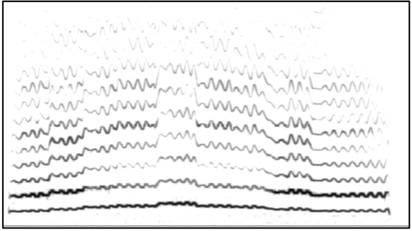
Figure 10-15: Detail of spectrogram from Figure 10-15. The exchange of energy between 2Fo and Fo is more easily seen in this larger image.
It is not coincidental that women adopt the same vowel strategy when approaching their primo passaggio: it is successful because of the intersection of pitch and vowel formants, which is very nearly the same for both genders. In men’s voices, this practice of shifting vowels toward a more closed position often is called vowel modification, which might result in a tone that is described as closed, or covered (10/12).
Media 10/12a: Voice synthesis showing cover as 2Fo crosses F1. Listen for the change of timbre that increasingly sounds like a more closed vowel. The only thing that changes in the production of the sound is pitch; formant remain fixed in place.
Further investigation of formants and pitch reveals that the primo and secondo passaggi actually might be a single event that stretches over a wide range of pitches. Kenneth Bozeman describes this solitary passaggio as the point in the scale where 2Fo sweeps above F1 of the vowel that is being sung (Bozeman, 2010). The location of this event therefore shifts up and down, parallel with the movement of formants: lower for closed vowels, higher for open vowels. By this definition, /i/ and /u/ make their transition to the upper extension no later than G3; /a/, however, waits until an octave higher.
Please take a moment to consider the implications of the previous paragraph. For many years—perhaps millennia—singers and their teachers have assumed that registration events always included a change in the way vocal folds oscillate. But this actually is not the case. When 2Fo approaches and then passes over the first formant, vocal timbre changes subtly, but noticeably. It sounds—and feels to the singer—like something has changed gears in the larynx. But in reality, it simply is a new timbre that is triggered by the relationship between the second harmonic and the first formant. Please spend some time listening to the audio examples included with 10/12, which will help train your ears to identify this phenomenon. The examples were created using a voice/formant synthesizer, which allows us better to understand the impact caused by the intersections of sung pitches and the resonances that amplify them.
Media 10/12b: Bonus video. Listen to the timbral differences between Pavarotti and his father as both singing higher pitches
So, the journey through the passaggio might be facilitated by subtly closing the vowel or by slightly lowering the larynx; either approach lowers the first formant to a frequency below that of 2Fo—the tricky part is to close the vowel enough to break the F1/2Fo bond without excessively distorting diction (Figure 10-16, 10/13).
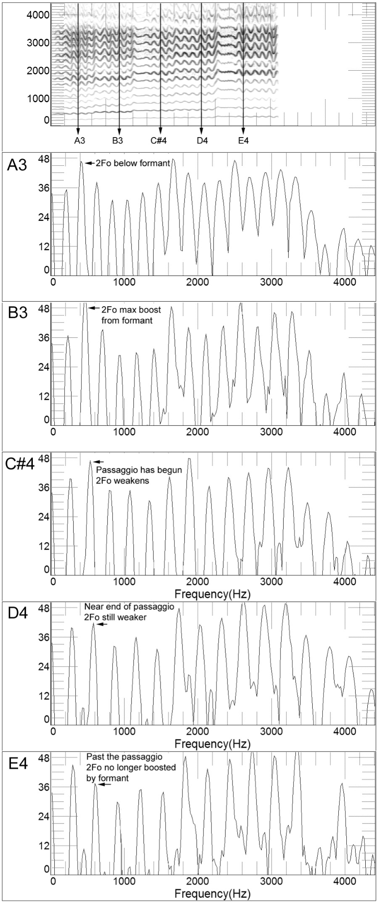
Figure 10-16: Ascending through passaggio on /e/. Note the changing amplitude of 2Fo as it approaches and passes F1.
Media 10/13: The dominant harmonic changes as harmonics approach and depart from formants
Unfortunately, many—if not most—developing singers initially take an opposite approach; instead of lowering F1 to decouple it from 2Fo, they allow the two to proceed up the scale in lock step. As we know, there are many ways to elevate F1, including dropping the jaw, narrowing the back of the throat, spreading the lips, or lifting the larynx (which explains the rising larynx noted by R. Miller). These actions compromise vocal technique and lead to a voice quality that more closely resembles yelling than singing.
Much of the pedagogic literature places the male passaggio in the range of C4-A4. Entrance to the zone is said to be lowest for basses and highest for leggiero (very light) tenors, but is variable depending on vowel and loudness. In this model, it generally is noted that closed vowels have an easier transit through the passaggio than do open. The reason for this difference is now clear: for most singers, closed vowels make their transition prior to entering that pitch zone. The very low first formants of /i/ and /u/ make those vowels the best candidates for initial success; /ɛ/ and /ͻ/ might also find an easy path, especially if tilted toward their more closed partners, /e/ and /o/.
Unfortunately, /a/ is notoriously difficult, especially for young tenors and high baritones. With a first formant in the vicinity of G5, the sweep of 2Fo above F1 occurs when the singer might be struggling simply to sing the high pitch, which might be at the absolute top of this range. This is when cover—deliberately closing the vowel or lengthening the vocal tract to lower F1—comes to the rescue.
What happens if the singer makes poor choices as the scale ascends? The result likely will be unpleasant, at least aesthetically. As we’ve seen, a common fault in developing singers is locking 2Fo with F1 by lifting the larynx or spreading the vowel. This strategy can be successful for a few pitches, but eventually leads to yelling; listeners are apt to wish the singer would not go any higher! Any vowel can be mistreated in this manner, but with its high first formant, /a/ is the most frequent victim. Of course, yelling cannot ascend indefinitely—eventually the voice will crack or break, perhaps flipping over into the falsetto production of Mode 2 (D. Miller, 2008) (Figure 10-17, 10/15).
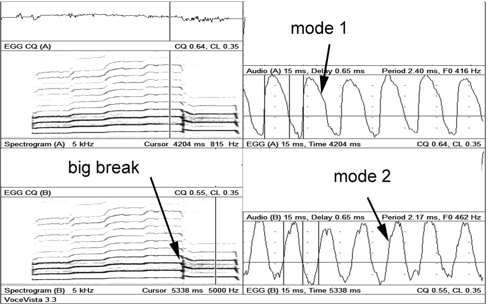
Figure 10-17: Register violation with a big break
Media 10/15: The big break
Nonlinear vocal tract dynamics help explain why this happens. As you will recall from Chapter 4, in a nonlinear system, formants actually can disrupt phonation if a harmonic coincides too closely with the center of its bandwidth; maximum boost occurs just below the formant—we probably want to cross over it as quickly as possible, because if we land right on it, the formant can induce instability. By continuing to open the vowel or lift the larynx, the singer chases F1 with 2Fo, keeping the latter in the “hot zone” just below the formant peak. Inevitably, a point comes at which F1 no longer can be elevated; 2Fo leaves its hot spot and steps directly into the formant. It is as if the harmonic has been walking merrily along a path, only to be snared by a hidden trap. This sudden union of 2Fo and F1 creates a voice break, which most singers—other than yodelers—would prefer to avoid. But whether passaggio events are described through a linear or nonlinear model, successful transition into the upper extension requires vocal tract or vowel modifications that result in a transfer of acoustic power away from 2Fo
But there is another strategy, which again we see in the work of Ken Bozeman (2017) and Michael Trimble (2013): doing nothing. It turns out that if we simply stay the course and refuse to let anything change—stable larynx, stable vowel, consistent breath, easy jaw and tongue—the voice will cross over formants in the passaggio as easily as a synthesizer does. But nothing must change. Even a subtle lifting of the larynx is enough to cause trouble. Alas, it is often exceedingly difficult for singers to do “nothing.”
Some singers employ yet another alternate strategy for negotiating the passaggio and entering the upper extension: they add nasality to break the F1/2Fo lock (10/16).
Media 10/16: Using nasality to "hide" the passaggio
Nasality might enable singers to produce high pitches with Mode 1 but does so at the price of altering basic vocal timbre (Figure 10-18). Nasality is created by lowering the soft palate to allow air and sound to enter the nasal cavities and exit through the nostrils. This dual passageway lengthens the vocal tract and lowers all formant frequencies.[9] Singing /ã/ instead of /a/ for pitches at the upper end of the passaggio causes F1 to drop below 2Fo, which we have already seen to be a desirable outcome. Problem solved? Not really. The use of nasality as a bridge to the upper extension is a huge aesthetic issue—it probably feels good to the singer, but listeners might not share his enthusiasm. There is no doubt that it helps some singers achieve and maintain the required tessitura. Whether or not it is an aesthetically pleasing strategy, however, is best left to the preferences of the individual singer, teacher and listener.
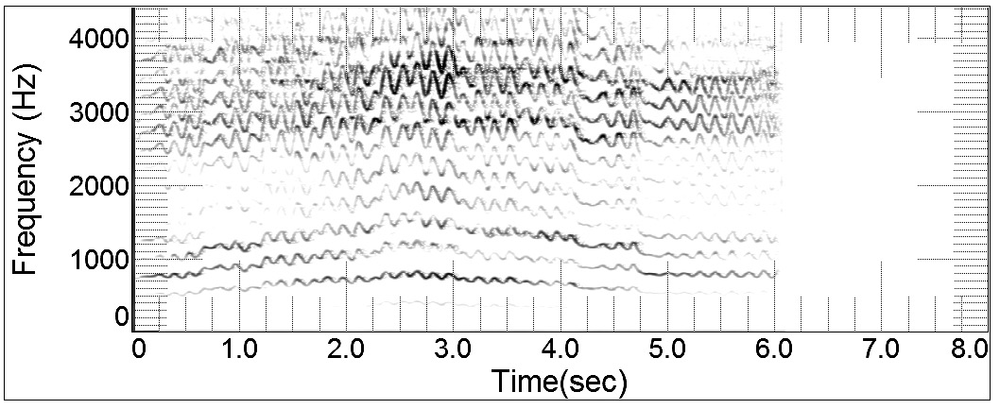
Figure 10-18: Nasality through the passaggio to reduce the strength of 2Fo. Note the singer's formant extending all the way to 4kHz, which is too high and leads to stridency
With the exception of falsettists, including male sopranos and some countertenors, men seldom need to traverse the path between physiologic source modes. Choristers, opera, and concert singers might use falsetto on occasion for special effect, but this shift usually can be concealed by a consonant or a melodic leap. Countertenors, however, routinely pass back and forth between the modes, often during melismatic passages where no helpful consonants come to the rescue. While further investigation into the acoustic and physiologic tactics employed for this singing is required, it is reasonable to hypothesize that the registration strategies employed by women—especially contraltos—are likely to be similarly successful for countertenors.
Some singers and teachers identify an additional register in the male voice: reinforced falsetto. Unfortunately, there is little consensus as to the meaning of this word or the vocal function it describes. For some, reinforced falsetto is a loud, well supported Mode 2 production with efficient glottal closure (a quick perusal of the Internet shows extensive use of this term by rock and blues singers). Some classically-oriented voice pedagogues see it a bit differently; to them, reinforced falsetto is a light, easy voice production that can serve as a bridge into the upper extension and Mode 1 vibration. From my perspective, any controversies that surround this term are rooted in semantics. Many singers learn to bridge the source modes during glissandi or scale passages; very few are able to sing a single pitch with a seamless crescendo from one mode to the other. This latter skill, however, often is suggested as a guide to the full-voiced production of high notes. But is this version of reinforced falsetto actually produced by Mode 2 vibration? There is evidence to suggest it is not.
Many men are capable of singing quite loudly in their falsetto register. Eventually, however, a point is reached where additional amplitude only can be provided by switching from Mode 2 to Mode 1. Excellent singers might be able to disguise this event from listeners, but it always is revealed through voice analysis (McCoy, 2003). Figure 10-19 shows a singer producing a crescendo from falsetto to full voice. An interruption is visible at the midpoint of the spectrogram, which is the moment the source mode shifts from 2 to 1 (10/17).
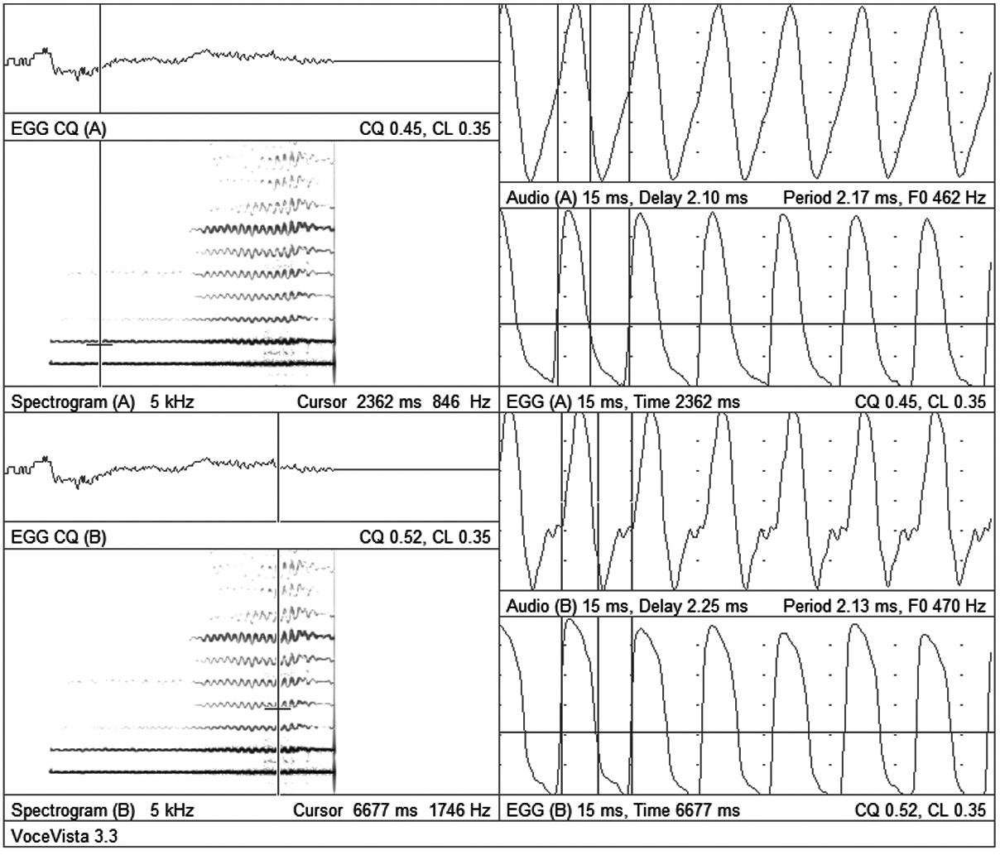
Figure 10-19: Crescendo from mode 2 to mode 1, B5-flat
Media 10/17: Seamless transition from mode 2 to mode 1 (tenor)
The upper and lower images display the EGG waveform before and after this shift; changes in the contour of the signal and the closed quotient are indicative of the switch of vibration modes. Figure 10-20 shows the same singer producing a similar crescendo from pianissimo to forte, but this time beginning with reinforced falsetto. As you can see, there is no interruption of the spectrographic image that indicates a change in source mode; EGG contour and CQ are consistent throughout and clearly are sung in Mode 1. Based on this type of evidence, it is very possible that reinforced falsetto simply is quiet Mode 1 production, not the Mode 2 vibration of true falsetto (10/18).
Media 10/18: Cresendo, entirely in mode 1
Belting
Controversies surrounding belting may actually exceed those of all other registration issues. Classically oriented voice teachers often misunderstand this form of vocal production and have little aesthetic appreciation for either the sound quality or the literature for which it is required. Objectively, there are many similarities between the female belt voice and the male operatic head voice. In both cases, Mode 1 is the glottal source and resonance is tuned to avoid obvious violations of register. The spectral envelope, however, is very different for belting. For the male head voice, the optimally desired timbre is that of balanced chiaroscuro; in belting, by contrast, the balance is almost completely shifted to the chiaro side with a bright, brassy timbre. Spectral analysis reveals strong harmonic overtones as high as 10,000Hz—very different from the classical ideal, in which the harmonics above 4,000Hz are sharply attenuated. Spectrograms of typical classical and belt singing are shown in Figure 10-21.
Formant tuning is approached very differently in belting, which generally relies on speech-like vowel production. At the point in the scale where the classical singer begins to close vowels to aid the transition from Mode 1 to Mode 2, belters choose to open vowels in a strategy that associates 2Fo with F1, which would be regarded as a register violation for operatic tenors and baritones. Linking 2Fo with F1 in this manner helps maintain Mode 1 vibration with ascending pitch, which enhances the brilliant, edgy quality characteristic of belting.
Three physiological strategies are commonly used to accommodate belt-friendly resonance: lifting the larynx, narrowing the pharynx, and increasing the horizontal opening of the mouth. Laryngeal elevation has the acoustic effect of raising the frequency of all formants, thereby brightening the projected sound. Tension in the extrinsic muscles holding the raised larynx may also provide extra leverage for the cricothyroid muscles as they work to elongate the vocal folds at the upper extreme of what is still Mode 1 production, dominated by action of the thyroarytenoid muscles. The vocal tract also can be shortened by changing the shape of the mouth, as happens when it is opened with a horizontal bias, as occurs in a broad smile. When belting is carried to very high pitches—all the way to F5 in some literature—vocal tract shortening might be required from both ends. Not all belters, however, sing with an elevated larynx. A similar acoustic effect, enhancing the high frequency components of the sound, is achieved by narrowing the pharynx. In this regard, a comparison can be made with brass instruments: the trumpet is a relatively narrow-bore instrument that produces a brilliant, brassy sound, roughly equivalent to a singer belting; the cornet and flugelhorn are both wider bore instruments with warmer, more mellifluous timbres, roughly equivalent to the operatic ideal.
Contrary to the very sincere belief of many singing teachers, belting is not inherently unhealthy,[10] nor is it accomplished by driving the full weight of the “chest voice” as high up the scale as possible. As the noted pedagogue Helen Kemp stated: “Singing is a learned behavior” (Kemp, 1985). This opinion is implicitly shared by classical voice teachers, few of whom would assign a demanding operatic aria to a student who is either physically or technically unprepared—to do so would place the student at risk of vocal injury and the teacher at risk of a malpractice lawsuit. Correct belting also is a learned behavior. Students must acquire the skill to adjust resonance, through optimal tuning of formants, in ways that accentuate tonal brilliance without excessive laryngeal stress. As in classical singing, proper breath support and appropriate release of tension from extrinsic laryngeal, tongue and jaw muscles are paramount. The vast majority of classically oriented voice teachers probably choose to specialize in that singing style and repertoire because it is music they know and love. This author would similarly suggest that teachers only attempt to assist with belting if they truly understand the technique and love the repertoire.
______________________________
Review Questions
____________________________________
-
Great controversies have arisen among singers and teachers over the terms chest and head voice. Many eschew them because they do not accurately represent the source of the sound, preferring terms such as modal and loft voice. Register names typically have been derived from sensation, not function. Low tones, be they called chest, modal or heavy mechanism, tend to create sympathetic vibrations through forced resonance that can be felt in the thorax. High tones often—though not universally—create sympathetic vibrations that are felt in the head. While neither chest nor head accurately describes all aspects of a register, they are common to our singing lexicon. In this author’s experience, few people misunderstand the basic concept of chest voice; the same is not necessarily true for alternate terms, including modal and heavy mechanism. ↑
-
While the terms Mode 1 and Mode 2 are far from universal, they are commonly used by many members of the voice research community, especially in Europe. Readers are welcome to substitute their preferred nomenclature for these terms. ↑
-
Voce Vista is the creation of D. Miller, G. Nair, H. Schutte and R. Horne, in association with the University of Groningen Voice Research Laboratory. ↑
-
CQ is used to indicate either closed or contact quotient. Because it is possible for the glottis to remain partially open during phonation, many voice experts prefer the latter term. ↑
-
CQ measures of >40% for Mode 1 and <40% for Mode 2 can be extremely variable—a reading of 50% is not sufficient evidence to make the inference of Mode 1 vibration. It is safe to say, however, that if a pitch can be sung in either in Mode 1 or Mode 2, CQ will be higher for the former. When using EGG to make assumptions about registration, it is essential to consider both the CQ reading and the shape of the signal, which indicates the relative speed of opening and closing portions of the cycle. ↑
-
Marking is a voice-saving strategy employed by professional singers during rehearsal. Some singers use falsetto for high pitches; other rely on octave displacement. ↑
-
Readers might do a quick search of YouTube or other media sharing site for the Russian tenor Ivan Kozlovsky, who was known for his “crazy” high notes that extended at least to F5—in his full voice! ↑
-
Some voice pedagogues, including Enrico Delle Sedie and Berton Coffin, have taken this concept to a higher level, developing systematic strategies for matching pitches with their optimal vowels. ↑
-
This formant lowering is counterintuitive. To the singer, nasality appears to create a brighter, more ringing sound. In reality, the uniform lowering of formants from the lengthened vocal tract (it now extends from the glottis to the nostrils) means resonance peaks occur at lower frequencies. The illusion of brightness almost certainly comes from sensations induced by forced resonance. ↑
-
Many singers and singing teachers have held the same beliefs regarding “new music,” especially pieces featuring extended vocal techniques. The author hopes that education and the examples provided by the long careers of singers such as Phyllis Bryn-Julson, Jan DeGaetani, Joan La Barbara, and now Barbara Hannigan will help dispel some of these earnestly held vocal prejudices. ↑